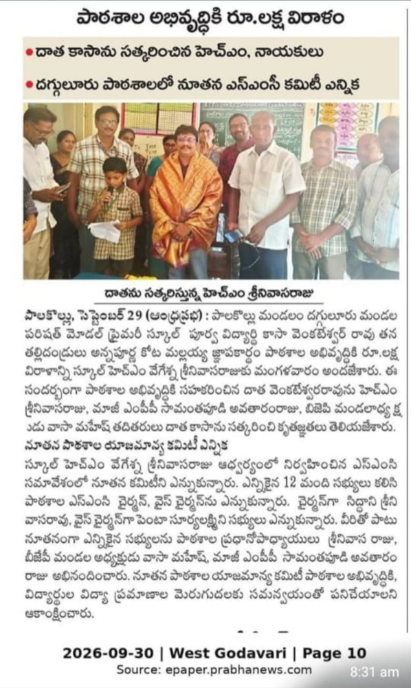

పశ్చిమ గోదావరి జిల్లా, పాలకొల్లు మండలం, దగ్గులూరు గ్రామంలో 1922 సంవత్సరంలో అంకురార్పణ జరుపుకున్న మన మండల పరిషత్ మోడల్ ప్రైమరీ స్కూల్ కేవలం అక్షరాలు నేర్పే బడి మాత్రమే కాదు... మన జీవితానికి తొలి పునాది వేసిన దేవాలయం.
ఇక్కడ నేర్చుకున్న అక్షరాలు, ఆడుకున్న ఆటలు, గురువుల దీవెనలు మనల్ని ఈరోజు సమాజంలో ఉన్నత స్థానాల్లో నిలబెట్టాయి. మనం ఎక్కడున్నా, ఏ స్థితిలో ఉన్నా మనల్ని తీర్చిదిద్దిన మాతృసమానమైన మన పాఠశాలకు తిరిగి ఏదో ఒకటి చేయాలనే తపన ప్రతి ఒక్కరిలో ఉంటుంది.
మన పాఠశాల అభివృద్ధికి పూర్వ విద్యార్థులు అందిస్తున్న సహకారం మరియు నూతన కమిటీ ఎన్నికల వివరాలు:

తేదీ: సెప్టెంబర్ 30, 2026 (ఆంధ్రప్రభ)
మన పాఠశాలలో చదువుకుంటున్న పేద మరియు మధ్యతరగతి గ్రామీణ విద్యార్థుల ఉజ్వల భవిష్యత్తు కోసం పూర్వ విద్యార్థులుగా మన వంతు బాధ్యతగా క్రింది కార్యక్రమాలలో పాలుపంచుకోవచ్చు:
గ్రంథాలయానికి కావలసిన పుస్తకాలు, నోట్బుక్స్, లేదా పాఠశాలకు అవసరమైన డిజిటల్ లెర్నింగ్ పరికరాలను సమకూర్చవచ్చు.
సందర్భానుసారం పాఠశాలను సందర్శించి, చిన్నారులకు ఉన్నత చదువులు మరియు కెరీర్ గురించి మార్గదర్శకత్వం, స్పూర్తినివ్వవచ్చు.
చిన్నారుల ఆరోగ్య బలం కోసం పాఠశాల మధ్యాహ్న భోజనంలో ప్రత్యేక పోషకాహార వితరణలో భాగస్వాములు కావచ్చు.
మీరు మన పాఠశాల కోసం ఏదైనా మంచి కార్యక్రమం చేయాలని తలచినా, లేదా మీ జ్ఞాపకాలను మాతో పంచుకోవాలనుకున్నా నేరుగా మన ప్రధానోపాధ్యాయులను సంప్రదించండి.
💬 హెడ్ మాస్టర్గారితో వాట్సాప్లో మాట్లాడండి